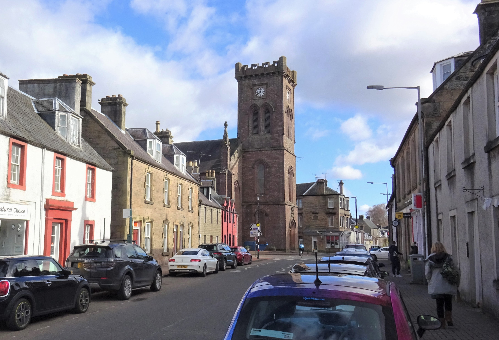
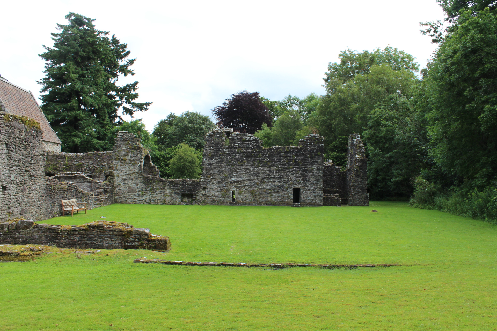
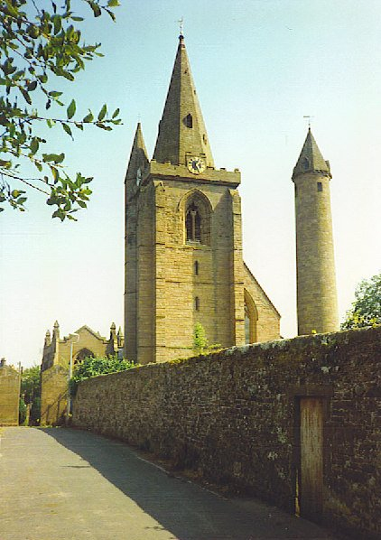
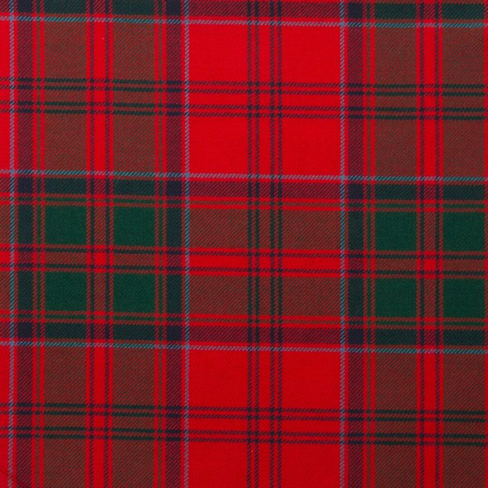

Most Likely Root
Mac Gille Doig Scottish Gaelic form meaning descendant of the servant or devotee of Saint Cadoc.Research Summary
This is the high-confidence version of the Doak origin story, separated from family lore and souvenir heraldry.
Doak is usually a Scottish surname variant of Doig. The older recorded forms include Dog, Doge and Dogg, clustered around places where Saint Cadoc was commemorated. George F. Black's The Surnames of Scotland links Dog, Dogg and Doig with Gille Dog, meaning Saint Cadoc's servant, and records Doak as a later spelling form.
The name should not be treated as proof that all Doaks descend from one medieval ancestor. In surnames based on a saint's servant or devotee, several unrelated families could adopt similar forms near churches, estates or clerical communities associated with that saint.
In Ireland, especially County Down, Doak can also represent a shortened Anglicized form of Mac Dabhóc, connected with the personal name David. Many Ulster Doaks may still be Scottish-origin families who moved through the plantation and Scots-Irish migration stream, so Irish records must be handled line by line.
Earliest Record
Alexander Doge, 1372 Vicar of Dunnychtyne, now Dunnichen, recorded in the Bishopric of Brechin register.Early Geography
Kilmadock and Menteith The name appears often near places where Cadoc was remembered.Important Caution
No universal arms Scottish coats of arms belong to individuals, not everyone of a surname.Meaning and Language
The name is best understood through Gaelic religious naming rather than through the modern English word "dog".
The Scottish form is commonly analysed as Mac Gille Doig. In broad terms, mac means son or descendant, gille means servant, lad or devotee, and Doig is connected with Cadog or Cadoc, the Welsh saint whose cult reached parts of Scotland. The practical surname meaning is therefore "descendant of the servant of Saint Cadoc."
The spelling Dog in medieval records can look misleading to modern readers. It is a phonetic surname form derived from the saint's name tradition, not a nickname from the animal. Later scribes and clerks rendered the sound in many ways: Dog, Doge, Dogg, Doig, Doag, Doeg, Dock, Dook and Doak.
Research position: for a Scottish Doak family, start with Doig/Dog records as well as Doak records. Treat the spellings as a family of forms until a particular branch proves otherwise.

Early Places
The record trail points to central and eastern Scotland first, then Ayrshire and Ulster.

Kilmadock
Parish named for Saint Cadoc, on the southern edge of old Perthshire and close to Doune.

Menteith
Several Dog/Doig records cluster around Menteith, including Inchmahome and Dunrobin.

Angus and Brechin
The 1372 Doge record belongs to the Brechin ecclesiastical record world.

Loch Lomond and Drymen
Useful context for Drummond territory and later clan association, not proof of every Doak line.
Documented Timeline
These entries favour records and published surname scholarship over unsupported family-tree repetition.
-
1372Alexander Doge, vicar of Dunnychtyne, now Dunnichen, appears in the Registrum Episcopatus Brechinensis. This is the common starting point for the written surname trail.
-
1457William Dog is recorded as a burgess of Aberdeen, showing the form beyond one parish setting.
-
1470sPatrick Dog and Walter Dog appear in Cupar-Angus records, giving an Angus/Perthshire footprint.
-
1491Alexander Dog is recorded as canon of Inchmahome in Menteith.
-
1532James Dog of Dunrobin receives lands of Severie in Kilmadock parish, a strong Menteith/Kilmadock anchor.
-
1583-1620Multiple Dog families are recorded around Gartincaber, Murdestoun, Ballingrew and Ballindornick in Menteith.
-
1623-1681Ayrshire and west-coast forms appear, including William Dowok, John Dock and Robert Dook.
-
1782Robert Doak is recorded in Prestwick, Ayrshire, showing the modern Doak spelling in Scottish records.
-
1700s-1800sDoak families become more visible in Ulster, North America, Canada, Australia and New Zealand through migration, church records, land records and census returns.
Spellings and Variants
Spelling was not fixed in medieval and early modern records. A single family line can move between forms.
| Form | Where It Fits | Research Note |
|---|---|---|
| Dog, Doge, Dogg | Early Scots record forms | Do not read these as animal nicknames; they belong to the Cadoc/Doig surname group. |
| Doig, Doeg, Doag | Common Scottish developments | Often the key spelling for Angus, Fife, Perthshire and Menteith research. |
| Dock, Dook, Dowok | Ayrshire and west-coast forms | Black records these as related forms in Prestwick, Ayr, Irvine and nearby records. |
| Doak, Doake, Doack | Later Scottish and Ulster/North American forms | The spelling most familiar in modern records, especially outside Scotland. |
| Doidge | Related English-looking form | Some surname dictionaries connect it with Doig/Doak, but English lines need separate proof. |
Scotland, Ulster and Ireland
Irish Doak records can represent two different stories that happen to meet in the same modern spelling.
The main Scottish story is Doak as a variant of Doig/Dog. This is especially persuasive where a family can be traced through Scotland or through Ulster Scots communities with Presbyterian, plantation or Scots-Irish migration context.
The second story is Irish, especially associated with County Down: Mac Dabhóc, "son of Dabhóc," a pet form of David. The lenited form is also associated with McCook. This does not cancel the Scottish origin; it means that a Doak family in Ireland must be checked against local records before assuming either origin.
A rare English explanation treats Doak as a variant of Duke. It is much less important for the surname as a whole, but it is worth knowing when researching English records.
Practical rule: if your documented line is Ulster Presbyterian, Antrim/Down, Pennsylvania, Virginia, Tennessee or the Carolinas, research both the Scottish Doig/Dog route and the Irish Mac Dabhóc possibility until parish, land, will or migration evidence chooses between them.
Clan Drummond Context
Doak/Doig is often treated as part of the Drummond orbit, but sept language needs care.
Clan Drummond is tied to Drymen, Loch Lomond and Perthshire. Modern clan lists commonly include Doig, Dock and related spellings among Drummond-associated names; many popular sept lists extend the group to Doak because Doak is a Doig/Dock spelling variant.
This association is historically plausible because early Dog/Doig families appear in Menteith and Kilmadock, near places where Drummond, Stewart and other regional powers mattered. It should still be described as an association, not as proof that every Doak descends by blood from the chiefs of Clan Drummond.
For personal use, Drummond tartan can be a reasonable heritage choice for a Doak family that identifies with the Doig/Dock Scottish line. For formal clan or heraldic claims, evidence of a particular family line matters.
Robert the Bruce and Bannockburn: the possible connection comes through Clan Drummond history. Drummond tradition says Sir Malcolm Drummond fought for Robert the Bruce at Bannockburn in 1314 and helped by using caltrops against English cavalry. For Doak families this is an indirect clan-association link, not proof that a named Doak, Dog or Doig ancestor was present at the battle.


Heraldry and the Family Crest
The attractive crest image is useful decoration and family-history context, but Scottish heraldry is legally personal.
In Scotland there is no single "Doak family coat of arms" that every person named Doak may use as their own. The Court of the Lord Lyon and Scotland's People both explain that Scottish coats of arms are granted to, and inherited by, particular individuals. Other descendants may need a matriculation, a recorded differenced version, if they can prove descent.
The crest artwork in this project is therefore presented as a popular surname illustration, not as evidence of personal entitlement to arms. It can still work well on a family-history page if the page is honest about what it represents.
Best wording: "A commonly reproduced Doak/Doig heraldic illustration, shown for visual and historical interest. Legal entitlement to Scottish arms requires a documented grant or matriculation."
Migration and Modern Distribution
The name moved through Scottish internal migration, Ulster settlement, and the wider Scots-Irish and British diaspora.
From the seventeenth century onward, Scottish families moved into Ulster in significant numbers. Doak lines in Antrim, Down and neighbouring counties should therefore be checked against Scottish Doig/Dog origins and Irish local surname origins. In North America, Doak families appear in early Pennsylvania, Virginia, Tennessee and later westward migration streams.
Forebears' modern distribution data places the Doak surname most often in the United States, with additional populations in Canada, Australia, Scotland, England, Northern Ireland and Ireland. Such databases are useful for broad patterns, but they cannot prove the origin of an individual family.
United States
Largest modern population Useful lines often run through Pennsylvania, Virginia, Tennessee and frontier Presbyterian communities.Ulster
Antrim and Down Check for Scottish planter families as well as the Irish Mac Dabhóc origin.Scotland
Perthshire, Angus, Ayrshire Search Doig, Dog and Dock forms, not only Doak.Common Pitfall
Distribution is not descent Maps show where the surname occurs, not which medieval line a person belongs to.Notable Bearers
These figures show how the Doak and Doig names spread into education, government, sport, science and conservation.
Rev. Samuel Doak
Presbyterian minister and educator in early Tennessee. He founded Salem Church and a school chartered as Martin Academy in 1783, later Washington College, and is linked to the Overmountain Men at Sycamore Shoals.
Dr. David Doig
Scottish educator, philologist and long-serving Rector of Stirling Grammar School. He contributed to the third edition of the Encyclopaedia Britannica and was elected FRSE.
William N. Doak
Railroad labour leader and U.S. Secretary of Labor under Herbert Hoover. The Department of Labor credits him with work toward the Davis-Bacon Act.
Bill "Spittin' Bill" Doak
Major League Baseball pitcher whose Rawlings glove design helped shape the modern baseball glove pocket and stayed in catalogues for decades.
David Doak
Northern Irish video game designer associated with Rare's GoldenEye 007, then co-founder of Free Radical Design and the TimeSplitters series.
Wade Doak
New Zealand diver, author, photographer and marine conservationist, remembered for advocacy around the Poor Knights Islands and marine protection.
How to Research a Doak Line
A surname history is a starting map. A family tree needs records for one person at a time.
- Start with the latest proven Doak ancestor and work backward through civil certificates, census returns, wills and land records.
- Search variant spellings: Doak, Doake, Doack, Doig, Dog, Doge, Dock, Dook and Dowok.
- For Scotland, use Scotland's People, old parish registers, kirk-session material, sasines, retours and burgh records.
- For Ulster, check Presbyterian registers, Tithe Applotment Books, Griffith's Valuation, estate papers, wills and townland patterns.
- For North America, track church affiliation, county formation, land grants, tax lists, Revolutionary-era files and migration routes.
- Use Y-DNA only as supporting evidence. It can connect male-line branches, but it cannot replace documentary proof.
Most useful next question: where was the earliest proven Doak ancestor born, married or buried? The answer usually decides whether to start in Scotland, Ulster, colonial America, Canada or another diaspora branch.
Sources and Further Reading
These are the sources used to rebuild the page. Surname-shop sites are treated as secondary at best.
- George F. Black, The Surnames of Scotland (1946) Bibliographic record via Open Library, with Doig/Doak excerpts available through Forebears: Doig and Forebears: Doak.
- Kilmadock parish and Saint Cadoc context St Andrews Corpus of Scottish Medieval Parish Churches and the local Doune and Deanston Kilmadock overview.
- Irish and English surname alternatives Geneanet's Doak entry, citing the Dictionary of American Family Names and Oxford family-name material.
- Scottish heraldry rules Court of the Lord Lyon FAQ and Scotland's People guide to coats of arms.
- Clan Drummond context CLAN.com Drummond history and divisions, used cautiously for clan association rather than proof of descent.
- Doig DNA and branch caution FamilyTreeDNA Doig project background, useful for explaining multiple possible Doig/Doak origins.
- Samuel Doak Tennessee Encyclopedia biography.
- William N. Doak U.S. Department of Labor biography.
- Bill Doak SABR BioProject and the National Baseball Hall of Fame glove history.
- Wade Doak RNZ obituary/report and Newsroom profile.